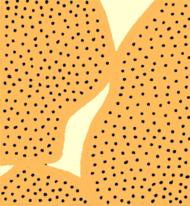

Provide examples of why processes in the ground are of interest to climatologists.
Discuss key properties that describe the thermal behavior of the surfaces in the climate system.
Explain how the key properties relate to heat conduction in soils.
Discussion (iClicker)
Why might climatologists be interested in studying soil thermal properties and subsurface processes?
Agriculture
Soil temperatures directly impact germination and growth of plants
Thermokarst
Melting ground ice, Tuktoyaktuk coastlands, 2017
Carbon Storage
Soils can act as a carbon sinks or sources
Role of Soil in the Climate System
The “active” layer of surface extends down to a relatively shallow depth.
The properties this layer make \(\Delta S\) of sensible heat and water significant over diurnal and annual scales.
Soils act as a ‘battery’ of both energy and mass relevant effecting the atmosphere.
Thermal Inertia
Specific heat \(c\): the quantity of heat required to raise the temperature of a unit mass of a material by 1 K.
Given in J kg-1 K-1.
Heat capacity \(C\) is the quantity of heat required to raise the temperature of a unit volume of a material by 1 K.
Given in J m-3 K-1.
\(C\) and \(c\) of soil materials
Table 1: Heat caqacity and specific heat of selected substances
Material
Heat capacity C MJ kg-1 K-1
Specific heat c kJ kg-1 K-1
Density ρ Mg m-3
Air
0.0012
1.01
0.0012
Water (liquid)
4.1800
4.18
1.0000
Ice
1.9000
2.10
0.9000
Mineral soil
2.1000
0.80
2.6500
Organic soil
2.5000
1.90
1.3000
Rock
2.0000
0.80
2.7000
Volume Fractions and Porosity
\[
\theta_a+\theta_w+\theta_g = 1
\qquad(1)\]
Where \(\theta_a\), \(\theta_w\), and \(\theta_g\) are fractional volumetric contents of soil grains, water, and air respectively. We can then define porosity \(\theta_P\) as: \[
\theta_P = \theta_a + \theta_w = 1 - \theta_g
\qquad(2)\]
It is also helpful to further partition soil into mineral \(\theta_m\) and organic \(\theta_o\) fractions:
\[
\theta_g = \theta_m + \theta_o
\qquad(3)\]
Volume Fractions and Porosity
Given a sample of know volume and mass, we can determine the fractional composition by:
Oven-drying soil samples to get \(\theta_w\)
Burning the dried sample in a furnace to get \(\theta_o\)
The residual will give us \(\theta_m\)
Compound substances
The heat capacity of a mixture of substances such as soil can be calculated if the heat capacity and volume fraction of each component are known. In the case of soil:
Which example would have the lowest heat capacity?
a.
b.
c.
Figure 1: Three photos of the same location under different conditions.
Heat capacity vs. Soil Moisture
import numpy as npimport matplotlib.pyplot as pltdef get_C(theta_m,theta_o,theta_w): C_w,C_m,C_o,C_a =4.18, 2.1,2.5,0.0012# MJ m-3 K-1 theta_a =1-(theta_m+theta_o+theta_w) theta_a[np.where(theta_a<0)]=np.nan # <<<<<< What does this line do? C = C_m*theta_m + C_o*theta_o + C_w*theta_w + C_a*theta_areturn(C)theta_w = np.linspace(0,1,25)C_mineral = get_C(.5,0,theta_w)C_mixed = get_C(.35,.2,theta_w)C_organic = get_C(0,.1,theta_w)
What does line 7 in the above codeblock do?
A: limits \(C\) to plausible values because volumetric fractions cannot be negative
B: limits \(C\) to plausible values because volumetric fractions cannot sum to more than one
Heat capacity and soil water content
What is the slope of the line?
What explains the offset between the lines?
Soil Heat Flux
The flux of heat energy through a given sil layer (\(\frac{H_g}{z}\)) is a product of the layers heat capacity \(C_z\) and it’s rate of temperature change with time (\(\frac{\Delta T_s}{t}\)):
Gives us the flux density of conducted heat (e.g., soil heat flux \(H_g\)) as a function of the temperature gradient and the thermal conductivity (\(k\)) in W m-1 K-1
A metric, given in W m-1 K-1, that indicates how well heat conducts through an object. Influenecd by conectivity, homogeneity, and density of the object.
Mineral matter is a good conductor
Water is intermediate
Air is very poor
Table 2: Thermal conductivity of selected substances
Material
k W m-1 K-1
Air
0.025
Water (liquid)
0.590
Ice
2.100
Quartz
8.800
Clay minerals
2.900
Organic matter
0.250
Stainless steel
21.000
Copper
380.000
\(k\) vs. \(\theta_w\)
A non-linear relation exists between \(k\) and soil water content (\(\theta_w\))
Adding water to dry soil (a) initially causes k to increase rapidly – rapid increase in area of contacts between soil particles resulting from water film.
As more water (b) is added, k increases less rapidly – area of contacts increases more slowly per unit of water added (i.e. diminishing returns).

\(k\) vs. \(\theta_w\)
Thermal diffusivity \(k\) of soil vs. volumetric water content \(\theta_w\)
Thermal diffusivity \(K\)
Thermal diffusivity K – indicates how quickly soil at depth will warm or cool in response to heating or cooling at the surface. It tells us how fast a temperature wave will diffuse or travel downward into a soil.
It’s units are m2 s-1 and it is defined as:
\[
K = \frac{k}{C}
\qquad(8)\]
Why the curious shape?
Thermal diffusivity \(k\) of soil vs. volumetric water content \(\theta_w\)
Summarzign Thermal Properties
How rapidly does a volume warm when a certain amount of energy is supplied?
Heat Capacity \(C\)
How well does heat conduct from one depth to another for a given temperature gradient?
Thermal conductivity \(k\)
How rapidly does a soil warm at depth if energy is available at the surface?:
Thermal diffusivity \(K\)
Take home points
Soils are important for storage of heat and water in the climate system.
Two basic thermal properties regulate the exchange - Heat capacity Cs and thermal conductivity k. From those we can derive thermal diffusivity κ = k / Cs.
The water content of the soil is significantly altering both C (linearly) and k (non-linearly).